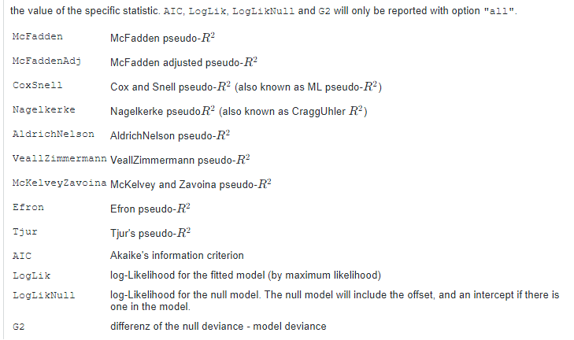
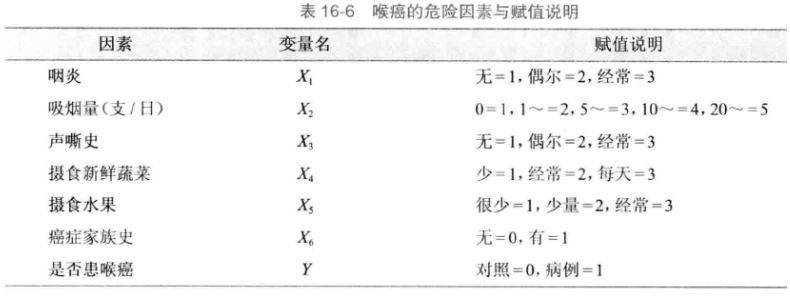

df16_2 <- foreign::read.spss("datasets/例16-02.sav",
to.data.frame = T,
use.value.labels = F,
reencode = "utf-8")
## re-encoding from utf-8
str(df16_2)
## 'data.frame': 54 obs. of 11 variables:
## $ .... : num 1 2 3 4 5 6 7 8 9 10 ...
## $ x1 : num 3 2 2 2 3 3 2 3 2 1 ...
## $ x2 : num 1 0 1 0 0 0 0 0 0 0 ...
## $ x3 : num 0 1 0 0 0 1 1 1 0 0 ...
## $ x4 : num 1 1 1 1 1 1 0 1 0 1 ...
## $ x5 : num 0 0 0 0 0 0 0 1 0 0 ...
## $ x6 : num 0 0 0 0 1 0 0 0 0 0 ...
## $ x7 : num 1 1 1 1 1 2 1 1 1 1 ...
## $ x8 : num 1 0 0 0 1 1 0 0 1 0 ...
## $ y : num 0 0 0 0 0 0 0 0 0 0 ...
## $ PGR_1: num 1 0 0 0 1 1 0 0 0 0 ...
## - attr(*, "variable.labels")= Named chr [1:11] "" "" "" "" ...
## ..- attr(*, "names")= chr [1:11] "...." "x1" "x2" "x3" ...18 Logistic回归
18.1 二项logistic回归
R语言中的factor()函数可以把变量变为因子类型，默认是没有等级之分的（可以理解为无序分类变量nominal）！当然也可以通过添加参数ordered=T变成有序因子（等级资料，有序分类ordinal）。
因变量是二分类变量时，可以使用二项逻辑回归（binomial logistic regression），自变量可以是数值变量、无序多分类变量、有序多分类变量。
本次数据使用孙振球版《医学统计学》第4版例16-2的数据，直接读取。
为了探讨冠心病发生的危险因素，对26例冠心病患者和28例对照者进行病例-对照研究，试用逻辑回归筛选危险因素。
数据一共11列，第1列是编号，第2-9列是自变量，第10列是因变量。
具体说明： - x1：年龄，小于45岁是1,45-55是2,55-65是3,65以上是4； - x2：高血压病史，1代表有，0代表无； - x3：高血压家族史，1代表有，0代表无； - x4：吸烟，1代表吸烟，0代表不吸烟； - x5：高血脂病史，1代表有，0代表无； - x6：动物脂肪摄入，0表示低，1表示高 - x7：BMI，小于24是1,24-26是2，大于26是3； - x8：A型性格，1代表是，0代表否； - y：是否是冠心病，1代表是，0代表否
这里的x1~y虽然是数值型，但并不是真的代表数字大小，只是为了方便标识，进行了转换，因此在进行logistic回归之前，我们要把数值型变量变成无序分类或有序分类变量，在R语言中可以通过factor()函数变成因子型实现。
# 变成因子型
df16_2[,c(2:10)] <- lapply(df16_2[,c(2:10)], factor)
str(df16_2)
## 'data.frame': 54 obs. of 11 variables:
## $ .... : num 1 2 3 4 5 6 7 8 9 10 ...
## $ x1 : Factor w/ 4 levels "1","2","3","4": 3 2 2 2 3 3 2 3 2 1 ...
## $ x2 : Factor w/ 2 levels "0","1": 2 1 2 1 1 1 1 1 1 1 ...
## $ x3 : Factor w/ 2 levels "0","1": 1 2 1 1 1 2 2 2 1 1 ...
## $ x4 : Factor w/ 2 levels "0","1": 2 2 2 2 2 2 1 2 1 2 ...
## $ x5 : Factor w/ 2 levels "0","1": 1 1 1 1 1 1 1 2 1 1 ...
## $ x6 : Factor w/ 2 levels "0","1": 1 1 1 1 2 1 1 1 1 1 ...
## $ x7 : Factor w/ 3 levels "1","2","3": 1 1 1 1 1 2 1 1 1 1 ...
## $ x8 : Factor w/ 2 levels "0","1": 2 1 1 1 2 2 1 1 2 1 ...
## $ y : Factor w/ 2 levels "0","1": 1 1 1 1 1 1 1 1 1 1 ...
## $ PGR_1: num 1 0 0 0 1 1 0 0 0 0 ...
## - attr(*, "variable.labels")= Named chr [1:11] "" "" "" "" ...
## ..- attr(*, "names")= chr [1:11] "...." "x1" "x2" "x3" ...需要注意的是自变量x1和x7，这两个应该是有序分类变量，这种自变量在进行逻辑回归时，可以进行哑变量设置，即给定一个参考，让其他所有组都和参考相比，比如这里，我们把x1变成因子型后，R语言在进行logistic回归时，会默认选择第一个为参考。
接下来进行二项逻辑回归，在R语言中，默认是以因子的第一个为参考的，不仅是自变量，因变量也是如此！ 和SPSS的默认方式不太一样。
f <- glm(y ~ x1 + x2 + x3 + x4 + x5 + x6 + x7 + x8,
data = df16_2,
family = binomial())
summary(f)
##
## Call:
## glm(formula = y ~ x1 + x2 + x3 + x4 + x5 + x6 + x7 + x8, family = binomial(),
## data = df16_2)
##
## Coefficients:
## Estimate Std. Error z value Pr(>|z|)
## (Intercept) -5.46026 2.07370 -2.633 0.00846 **
## x12 0.85285 1.54399 0.552 0.58070
## x13 0.47754 1.59320 0.300 0.76438
## x14 3.44227 2.10985 1.632 0.10278
## x21 1.14905 0.93176 1.233 0.21750
## x31 1.66039 1.16857 1.421 0.15535
## x41 0.85994 1.32437 0.649 0.51613
## x51 0.73600 0.97088 0.758 0.44840
## x61 3.92067 1.57004 2.497 0.01252 *
## x72 -0.03467 1.13363 -0.031 0.97560
## x73 -0.38230 1.61710 -0.236 0.81311
## x81 2.46322 1.10484 2.229 0.02578 *
## ---
## Signif. codes: 0 '***' 0.001 '**' 0.01 '*' 0.05 '.' 0.1 ' ' 1
##
## (Dispersion parameter for binomial family taken to be 1)
##
## Null deviance: 74.786 on 53 degrees of freedom
## Residual deviance: 40.028 on 42 degrees of freedom
## AIC: 64.028
##
## Number of Fisher Scoring iterations: 6结果详解：
Deviance Residuals:表示偏差残差统计量。在理想情况下应服从正态分布，均值应为0。
在此例中，中位数的符号为负（-0.01406），表明整体向左偏移，中位数的大小表明偏移的程度。第一个四分位数（1Q）和第三个四分位数（3Q）为两侧“尾巴”分布的幅度。这里3Q大于1Q（绝对值），表明这个曲线是向右倾斜的。最大和最小残差可用来检验数据中的离群值。
结果中Estimate是回归系数和截距，Std. Error表示回归系数的标准误，z value是统计量值（z的平方就是Wald值），Pr(>|z|)是P值。
β值（这里就是Estimate）是指回归系数和截距（常数项），可以是负数（负相关时回归系数出现负值）；
OR是比值比（odds ratio），OR = exp(β)，其取值范围是0至正无穷，不可能是负数；
Wald是一个卡方值，等于β除以它的标准误（这里是Std. Error），然后取平方（也就是z值的平方），因此也不可能是负数。Wald用于对β值进行检验，考察β值是否等于0。若β值等于0，其对应的OR值，也就是Exp(β)为1，表明两组没有显著差异。Wald值越大，β值越不可能等于0。
结果中出现了x12/x13/x14这种，这是因为R语言在做回归时，如果设置了哑变量，默认是以第一个为参考的，其余都是和第一个进行比较，这也是R中自动进行哑变量编码的方式。
Null deviance:无效偏差（零偏差），Residual deviance:残差偏差，无效偏差和残差偏差之间的差异越大越好，用来评价模型与实际数据的吻合情况。
AIC：赤池信息准则，表示模型拟合程度的好坏，AIC越低表示模型拟合越好。
最后还有一个Fisher Scoring的迭代次数，这个和最大似然函数的计算有关。
我们可以通过函数的方式分别获取模型信息。
# β值
coefficients(f)
## (Intercept) x12 x13 x14 x21 x31
## -5.46025547 0.85285212 0.47754497 3.44227124 1.14905003 1.66039360
## x41 x51 x61 x72 x73 x81
## 0.85994185 0.73600239 3.92067487 -0.03467497 -0.38230011 2.46321944
# β值
coef(f)
## (Intercept) x12 x13 x14 x21 x31
## -5.46025547 0.85285212 0.47754497 3.44227124 1.14905003 1.66039360
## x41 x51 x61 x72 x73 x81
## 0.85994185 0.73600239 3.92067487 -0.03467497 -0.38230011 2.46321944
# β值的95%可信区间
confint(f)
## Waiting for profiling to be done...
## 2.5 % 97.5 %
## (Intercept) -10.3696980 -1.983104
## x12 -2.0317236 4.405067
## x13 -2.5429244 4.085370
## x14 -0.2319302 8.343123
## x21 -0.6458070 3.099838
## x31 -0.5431686 4.205175
## x41 -1.6713365 3.801261
## x51 -1.1846658 2.725051
## x61 1.3290533 7.677657
## x72 -2.3618580 2.224863
## x73 -3.8303437 2.725470
## x81 0.5105394 4.997352
# OR值
exp(coef(f))
## (Intercept) x12 x13 x14 x21 x31
## 0.004252469 2.346329320 1.612111759 31.257871683 3.155194147 5.261381340
## x41 x51 x61 x72 x73 x81
## 2.363023282 2.087573511 50.434470096 0.965919321 0.682290259 11.742555242
# OR值的95%的可信区间
exp(confint(f))
## Waiting for profiling to be done...
## 2.5 % 97.5 %
## (Intercept) 3.136876e-05 0.1376413
## x12 1.311093e-01 81.8646261
## x13 7.863610e-02 59.4639513
## x14 7.930015e-01 4201.1887167
## x21 5.242393e-01 22.1943589
## x31 5.809047e-01 67.0323349
## x41 1.879956e-01 44.7576059
## x51 3.058484e-01 15.2571993
## x61 3.777465e+00 2159.5535363
## x72 9.424495e-02 9.2522177
## x73 2.170216e-02 15.2635868
## x81 1.666190e+00 148.0206875这里x21的OR值是2.346329320，代表：45~55岁的人群患冠心病的风险是小于45岁人群的2.346329320倍，但是这个结果并没有统计学意义！
# Wald值
summary(f)$coefficients[,3]^2
## (Intercept) x12 x13 x14 x21 x31
## 6.933188870 0.305111544 0.089843733 2.661883233 1.520790277 2.018903576
## x41 x51 x61 x72 x73 x81
## 0.421615676 0.574682148 6.235929079 0.000935592 0.055890396 4.970577395
# P值
summary(f)$coefficients[,4]
## (Intercept) x12 x13 x14 x21 x31
## 0.00846107 0.58069555 0.76437591 0.10277898 0.21749994 0.15535128
## x41 x51 x61 x72 x73 x81
## 0.51613195 0.44840433 0.01251839 0.97559855 0.81311338 0.02578204
# 预测值
fitted(f) # 或者 predict(f,type = "response")
## 1 2 3 4 5 6
## 0.375076515 0.110360122 0.069240725 0.023034427 0.905605901 0.491543165
## 7 8 9 10 11 12
## 0.049878030 0.151052146 0.104875967 0.009948712 0.208062753 0.046013662
## 13 14 15 16 17 18
## 0.009879122 0.497751927 0.500211100 0.074509703 0.023034427 0.105543397
## 19 20 21 22 23 24
## 0.359548891 0.441102099 0.048627400 0.734770361 0.366272916 0.009879122
## 25 26 27 28 29 30
## 0.049878030 0.366272916 0.009879122 0.101665098 0.995553588 0.950848767
## 31 32 33 34 35 36
## 0.712839656 0.995611072 0.216828996 0.984826081 0.543195397 0.905612594
## 37 38 39 40 41 42
## 0.868286980 0.993760333 0.868286980 0.034813473 0.902606657 0.966930037
## 43 44 45 46 47 48
## 0.375076515 0.964725296 0.840087511 0.818110300 0.881331876 0.676305952
## 49 50 51 52 53 54
## 0.780828686 0.555921773 0.986103872 0.816157300 0.466253375 0.655579178
# 偏差
deviance(f)
## [1] 40.02758
# 残差自由度
df.residual(f)
## [1] 42
# 伪R^2
DescTools::PseudoR2(f, which = c("McFadden", "CoxSnell", "Nagelkerke"))
## McFadden CoxSnell Nagelkerke
## 0.4647704 0.4746397 0.6331426这里需要说明以下fitted(f)，也就是predict(f,type = "response")得到的结果是预测概率，范围是0-1之间的。
对于logistic回归来说，如果不使用type函数，默认是type = "link"，返回的是logit(P)的值。
# 默认返回logit(P)的值
predict(f)
# 返回概率
predict(f, type = "response")模型整体的假设检验：
# 先构建一个只有截距的模型
f0 <- glm(y ~ 1, data = df16_2, family = binomial())
# 原模型和这个空模型进行比较
anova(f0,f,test="Chisq")
## Analysis of Deviance Table
##
## Model 1: y ~ 1
## Model 2: y ~ x1 + x2 + x3 + x4 + x5 + x6 + x7 + x8
## Resid. Df Resid. Dev Df Deviance Pr(>Chi)
## 1 53 74.786
## 2 42 40.028 11 34.758 0.0002716 ***
## ---
## Signif. codes: 0 '***' 0.001 '**' 0.01 '*' 0.05 '.' 0.1 ' ' 1P<0.001，说明我们的模型是有意义的。
逐步回归法的logistic回归，可以使用step()函数：
# 向前
f1 <- step(f, direction = "forward")
## Start: AIC=64.03
## y ~ x1 + x2 + x3 + x4 + x5 + x6 + x7 + x8
summary(f1)
##
## Call:
## glm(formula = y ~ x1 + x2 + x3 + x4 + x5 + x6 + x7 + x8, family = binomial(),
## data = df16_2)
##
## Coefficients:
## Estimate Std. Error z value Pr(>|z|)
## (Intercept) -5.46026 2.07370 -2.633 0.00846 **
## x12 0.85285 1.54399 0.552 0.58070
## x13 0.47754 1.59320 0.300 0.76438
## x14 3.44227 2.10985 1.632 0.10278
## x21 1.14905 0.93176 1.233 0.21750
## x31 1.66039 1.16857 1.421 0.15535
## x41 0.85994 1.32437 0.649 0.51613
## x51 0.73600 0.97088 0.758 0.44840
## x61 3.92067 1.57004 2.497 0.01252 *
## x72 -0.03467 1.13363 -0.031 0.97560
## x73 -0.38230 1.61710 -0.236 0.81311
## x81 2.46322 1.10484 2.229 0.02578 *
## ---
## Signif. codes: 0 '***' 0.001 '**' 0.01 '*' 0.05 '.' 0.1 ' ' 1
##
## (Dispersion parameter for binomial family taken to be 1)
##
## Null deviance: 74.786 on 53 degrees of freedom
## Residual deviance: 40.028 on 42 degrees of freedom
## AIC: 64.028
##
## Number of Fisher Scoring iterations: 6
# 向后
f2 <- step(f, direction = "backward")
## Start: AIC=64.03
## y ~ x1 + x2 + x3 + x4 + x5 + x6 + x7 + x8
##
## Df Deviance AIC
## - x7 2 40.086 60.086
## - x1 3 43.933 61.933
## - x4 1 40.466 62.466
## - x5 1 40.605 62.605
## - x2 1 41.600 63.600
## <none> 40.028 64.028
## - x3 1 42.196 64.196
## - x8 1 46.365 68.365
## - x6 1 50.469 72.469
##
## Step: AIC=60.09
## y ~ x1 + x2 + x3 + x4 + x5 + x6 + x8
##
## Df Deviance AIC
## - x1 3 44.541 58.541
## - x5 1 40.611 58.611
## - x4 1 40.814 58.814
## - x2 1 41.616 59.616
## <none> 40.086 60.086
## - x3 1 42.747 60.747
## - x8 1 47.255 65.255
## - x6 1 51.415 69.415
##
## Step: AIC=58.54
## y ~ x2 + x3 + x4 + x5 + x6 + x8
##
## Df Deviance AIC
## - x5 1 45.746 57.746
## - x4 1 45.779 57.779
## - x3 1 45.853 57.853
## <none> 44.541 58.541
## - x2 1 46.763 58.763
## - x8 1 50.136 62.136
## - x6 1 54.588 66.588
##
## Step: AIC=57.75
## y ~ x2 + x3 + x4 + x6 + x8
##
## Df Deviance AIC
## - x4 1 47.537 57.537
## <none> 45.746 57.746
## - x2 1 48.470 58.470
## - x3 1 49.083 59.083
## - x8 1 51.976 61.976
## - x6 1 56.634 66.634
##
## Step: AIC=57.54
## y ~ x2 + x3 + x6 + x8
##
## Df Deviance AIC
## <none> 47.537 57.537
## - x3 1 50.276 58.276
## - x2 1 51.418 59.418
## - x8 1 53.869 61.869
## - x6 1 59.649 67.649
summary(f2)
##
## Call:
## glm(formula = y ~ x2 + x3 + x6 + x8, family = binomial(), data = df16_2)
##
## Coefficients:
## Estimate Std. Error z value Pr(>|z|)
## (Intercept) -3.0314 0.8965 -3.381 0.000722 ***
## x21 1.4715 0.7656 1.922 0.054617 .
## x31 1.2251 0.7543 1.624 0.104359
## x61 3.6124 1.3391 2.698 0.006985 **
## x81 1.8639 0.8045 2.317 0.020505 *
## ---
## Signif. codes: 0 '***' 0.001 '**' 0.01 '*' 0.05 '.' 0.1 ' ' 1
##
## (Dispersion parameter for binomial family taken to be 1)
##
## Null deviance: 74.786 on 53 degrees of freedom
## Residual deviance: 47.537 on 49 degrees of freedom
## AIC: 57.537
##
## Number of Fisher Scoring iterations: 5
# 步进法
f3 <- step(f, direction = "both")
## Start: AIC=64.03
## y ~ x1 + x2 + x3 + x4 + x5 + x6 + x7 + x8
##
## Df Deviance AIC
## - x7 2 40.086 60.086
## - x1 3 43.933 61.933
## - x4 1 40.466 62.466
## - x5 1 40.605 62.605
## - x2 1 41.600 63.600
## <none> 40.028 64.028
## - x3 1 42.196 64.196
## - x8 1 46.365 68.365
## - x6 1 50.469 72.469
##
## Step: AIC=60.09
## y ~ x1 + x2 + x3 + x4 + x5 + x6 + x8
##
## Df Deviance AIC
## - x1 3 44.541 58.541
## - x5 1 40.611 58.611
## - x4 1 40.814 58.814
## - x2 1 41.616 59.616
## <none> 40.086 60.086
## - x3 1 42.747 60.747
## + x7 2 40.028 64.028
## - x8 1 47.255 65.255
## - x6 1 51.415 69.415
##
## Step: AIC=58.54
## y ~ x2 + x3 + x4 + x5 + x6 + x8
##
## Df Deviance AIC
## - x5 1 45.746 57.746
## - x4 1 45.779 57.779
## - x3 1 45.853 57.853
## <none> 44.541 58.541
## - x2 1 46.763 58.763
## + x1 3 40.086 60.086
## + x7 2 43.933 61.933
## - x8 1 50.136 62.136
## - x6 1 54.588 66.588
##
## Step: AIC=57.75
## y ~ x2 + x3 + x4 + x6 + x8
##
## Df Deviance AIC
## - x4 1 47.537 57.537
## <none> 45.746 57.746
## - x2 1 48.470 58.470
## + x5 1 44.541 58.541
## + x1 3 40.611 58.611
## - x3 1 49.083 59.083
## + x7 2 44.697 60.697
## - x8 1 51.976 61.976
## - x6 1 56.634 66.634
##
## Step: AIC=57.54
## y ~ x2 + x3 + x6 + x8
##
## Df Deviance AIC
## <none> 47.537 57.537
## + x1 3 41.625 57.625
## + x4 1 45.746 57.746
## + x5 1 45.779 57.779
## - x3 1 50.276 58.276
## - x2 1 51.418 59.418
## + x7 2 46.792 60.792
## - x8 1 53.869 61.869
## - x6 1 59.649 67.649
summary(f3)
##
## Call:
## glm(formula = y ~ x2 + x3 + x6 + x8, family = binomial(), data = df16_2)
##
## Coefficients:
## Estimate Std. Error z value Pr(>|z|)
## (Intercept) -3.0314 0.8965 -3.381 0.000722 ***
## x21 1.4715 0.7656 1.922 0.054617 .
## x31 1.2251 0.7543 1.624 0.104359
## x61 3.6124 1.3391 2.698 0.006985 **
## x81 1.8639 0.8045 2.317 0.020505 *
## ---
## Signif. codes: 0 '***' 0.001 '**' 0.01 '*' 0.05 '.' 0.1 ' ' 1
##
## (Dispersion parameter for binomial family taken to be 1)
##
## Null deviance: 74.786 on 53 degrees of freedom
## Residual deviance: 47.537 on 49 degrees of freedom
## AIC: 57.537
##
## Number of Fisher Scoring iterations: 5按照步进法最终纳入的自变量是x2,x6,x8。
18.2 多项逻辑回归
因变量是无序多分类资料（＞2）时，可使用多分类逻辑回归（multinomial logistic regression）。
使用课本例16-5的数据，课本电子版及数据已上传到QQ群，自行下载即可。
某研究人员欲了解不同社区和性别之间居民获取健康知识的途径是否相同，对2个社区的314名成人进行了调查，其中X1是社区，社区1用0表示，社区2用1表示；X2是性别，0是男，1是女，Y是获取健康知识途径，1是传统大众传媒，2是网络，3是社区宣传。
df <- read.csv("datasets/例16-05.csv",header = T)
psych::headtail(df)
## Warning: headtail is deprecated. Please use the headTail function
## X1 X2 Y
## 1 0 0 1
## 2 0 0 1
## 3 0 0 1
## 4 0 0 1
## ... ... ... ...
## 311 1 1 3
## 312 1 1 3
## 313 1 1 3
## 314 1 1 3首先变为因子型，无需多分类的logistic回归需要对因变量设置参考，我们这里直接用factor()函数变为因子，这样在进行无序多分类的logistic时默认是以第一个为参考。也可以使用relevel()重新设置参考。
df$X1 <- factor(df$X1,levels = c(0,1),labels = c("社区1","社区2"))
df$X2 <- factor(df$X2,levels = c(0,1),labels = c("男","女"))
# 因变量设置参考，这里选择第1个（传统大众传媒）为参考
df$Y <- factor(df$Y,levels = c(1,2,3),labels = c("传统大众传媒","网络","社区宣传"))
str(df)
## 'data.frame': 314 obs. of 3 variables:
## $ X1: Factor w/ 2 levels "社区1","社区2": 1 1 1 1 1 1 1 1 1 1 ...
## $ X2: Factor w/ 2 levels "男","女": 1 1 1 1 1 1 1 1 1 1 ...
## $ Y : Factor w/ 3 levels "传统大众传媒",..: 1 1 1 1 1 1 1 1 1 1 ...使用nnet::multinom进行无序多分类的logistic回归：
library(nnet)
fit <- multinom(Y ~ X1 + X2, data = df, model = T)
## # weights: 12 (6 variable)
## initial value 344.964259
## iter 10 value 316.575399
## iter 10 value 316.575399
## iter 10 value 316.575399
## final value 316.575399
## converged
summary(fit)
## Call:
## multinom(formula = Y ~ X1 + X2, data = df, model = T)
##
## Coefficients:
## (Intercept) X1社区2 X2女
## 网络 0.5484998 -1.3743147 0.4321069
## 社区宣传 0.3940422 -0.9933526 1.2266459
##
## Std. Errors:
## (Intercept) X1社区2 X2女
## 网络 0.2583299 0.3201514 0.3265384
## 社区宣传 0.2574175 0.2952083 0.2991714
##
## Residual Deviance: 633.1508
## AIC: 645.1508可以看到结果比二项逻辑回归的结果简洁多了，少了很多信息，只给出了Coefficients/Std. Errors/Residual Deviance/AIC。
不过也是两个模型的结果，分别是 社区宣传 和 传统大众传媒 比，网络 和 传统大众传媒 比。
自变量的Z值（wald Z, Z-score）和P值需要手动计算:
z_stats <- summary(fit)$coefficients/summary(fit)$standard.errors
p_values <- (1 - pnorm(abs(z_stats)))*2
p_values
## (Intercept) X1社区2 X2女
## 网络 0.03373263 1.765117e-05 1.857371e-01
## 社区宣传 0.12583082 7.656564e-04 4.128929e-05但其实可以调包解决：
res <- broom::tidy(fit)
res
## # A tibble: 6 × 6
## y.level term estimate std.error statistic p.value
## <chr> <chr> <dbl> <dbl> <dbl> <dbl>
## 1 网络 (Intercept) 0.548 0.258 2.12 0.0337
## 2 网络 X1社区2 -1.37 0.320 -4.29 0.0000177
## 3 网络 X2女 0.432 0.327 1.32 0.186
## 4 社区宣传 (Intercept) 0.394 0.257 1.53 0.126
## 5 社区宣传 X1社区2 -0.993 0.295 -3.36 0.000766
## 6 社区宣传 X2女 1.23 0.299 4.10 0.0000413OR值及其95%的可信区间也没有给出来，需要手动计算OR值和可信区间：
# 计算OR值
OR <- exp(coef(fit))
OR
## (Intercept) X1社区2 X2女
## 网络 1.730655 0.2530129 1.540500
## 社区宣传 1.482963 0.3703330 3.409774
# 计算OR值的95%的可信区间
OR.confi <- exp(confint(fit))
OR.confi
## , , 网络
##
## 2.5 % 97.5 %
## (Intercept) 1.0430848 2.8714501
## X1社区2 0.1350919 0.4738666
## X2女 0.8122910 2.9215386
##
## , , 社区宣传
##
## 2.5 % 97.5 %
## (Intercept) 0.8953982 2.4560912
## X1社区2 0.2076398 0.6605021
## X2女 1.8970133 6.1288742模型整体的假设检验：
# 先构建一个只有截距的模型
fit0 <- multinom(Y ~ 1, data = df, model = T)
## # weights: 6 (2 variable)
## initial value 344.964259
## final value 338.603448
## converged
# 两个模型比较,Likelihood ratio tests
anova(fit0, fit)
## Likelihood ratio tests of Multinomial Models
##
## Response: Y
## Model Resid. df Resid. Dev Test Df LR stat. Pr(Chi)
## 1 1 626 677.2069
## 2 X1 + X2 622 633.1508 1 vs 2 4 44.0561 6.245931e-09P<0.001，模型具有统计学意义。
获取模型预测的类别：
pred <- predict(fit, df, type = "class")
head(pred)
## [1] 网络 网络 网络 网络 网络 网络
## Levels: 传统大众传媒 网络 社区宣传获取模型预测的概率：
prob <- predict(fit, df, type = "probs") # 或者使用 fitted(fit)
head(prob)
## 传统大众传媒 网络 社区宣传
## 1 0.2373257 0.4107289 0.3519453
## 2 0.2373257 0.4107289 0.3519453
## 3 0.2373257 0.4107289 0.3519453
## 4 0.2373257 0.4107289 0.3519453
## 5 0.2373257 0.4107289 0.3519453
## 6 0.2373257 0.4107289 0.3519453模型拟合优度的检验，这里使用卡方检验：
chisq.test(df$Y, pred)
##
## Pearson's Chi-squared test
##
## data: df$Y and pred
## X-squared = 39.521, df = 4, p-value = 5.436e-08计算伪R^2：
DescTools::PseudoR2(fit, which = "all")
## McFadden McFaddenAdj CoxSnell Nagelkerke AldrichNelson
## 0.06505559 0.04733575 0.13090778 0.14803636 NA
## VeallZimmermann Efron McKelveyZavoina Tjur AIC
## NA NA NA NA 645.15079819
## BIC logLik logLik0 G2
## 667.64715610 -316.57539909 -338.60344772 44.05609725不仅给出了伪R^2，还给出了超多的值，每一项的意义可以参考下面这张图：

结果解读可以参考二项逻辑回归。
18.3 有序逻辑回归
ordinal logistic regression适用于因变量为等级资料。使用课本例16-4的数据。
随机选取84例患者做临床试验，探讨性别和治疗方法对该病的影响。变量赋值为：性别（X1，男=0，女=1），治疗方法（X2，传统疗法=0，新型疗法=1），疗效（Y，无效=1，有效=2，痊愈=3）。
df <- read.csv("datasets/例16-04.csv",header = T)
psych::headtail(df)
## Warning: headtail is deprecated. Please use the headTail function
## X1 X2 Y
## 1 0 0 1
## 2 0 0 1
## 3 0 0 1
## 4 0 0 1
## ... ... ... ...
## 81 1 1 3
## 82 1 1 3
## 83 1 1 3
## 84 1 1 3变为因子型：
# 因变量变为有序因子
df$Y <- factor(df$Y, levels = c(1,2,3),
labels = c("无效","有效","痊愈"),
ordered = T)
# 自变量变为无序因子
df$X1 <- factor(df$X1,levels = c(0,1),labels = c("男","女"))
df$X2 <- factor(df$X2,levels = c(0,1),labels = c("传统疗法","新型疗法"))
str(df)
## 'data.frame': 84 obs. of 3 variables:
## $ X1: Factor w/ 2 levels "男","女": 1 1 1 1 1 1 1 1 1 1 ...
## $ X2: Factor w/ 2 levels "传统疗法","新型疗法": 1 1 1 1 1 1 1 1 1 1 ...
## $ Y : Ord.factor w/ 3 levels "无效"<"有效"<..: 1 1 1 1 1 1 1 1 1 1 ...使用MASS::polr拟合有序逻辑回归：
library(MASS)
fit <- polr(Y ~ X1 + X2, data = df,Hess = TRUE,method = "logistic")
summary(fit)
## Call:
## polr(formula = Y ~ X1 + X2, data = df, Hess = TRUE, method = "logistic")
##
## Coefficients:
## Value Std. Error t value
## X1女 1.319 0.5381 2.451
## X2新型疗法 1.797 0.4718 3.809
##
## Intercepts:
## Value Std. Error t value
## 无效|有效 1.8128 0.5654 3.2061
## 有效|痊愈 2.6672 0.6065 4.3979
##
## Residual Deviance: 150.0294
## AIC: 158.0294结果也是没有给出P值，手动计算P值：
p <- pnorm(abs(coef(summary(fit))[, "t value"]),lower.tail = F)*2
p
## X1女 X2新型疗法 无效|有效 有效|痊愈
## 1.425572e-02 1.392807e-04 1.345300e-03 1.092866e-05这次broom::tidy(fit)并没有直接给出P值：
broom::tidy(fit)
## # A tibble: 4 × 5
## term estimate std.error statistic coef.type
## <chr> <dbl> <dbl> <dbl> <chr>
## 1 X1女 1.32 0.538 2.45 coefficient
## 2 X2新型疗法 1.80 0.472 3.81 coefficient
## 3 无效|有效 1.81 0.565 3.21 scale
## 4 有效|痊愈 2.67 0.606 4.40 scaleOR值：
OR <- exp(coef(fit))
OR
## X1女 X2新型疗法
## 3.738765 6.033338平行线检验(Brant-Wald test)：
brant::brant(fit)
## --------------------------------------------
## Test for X2 df probability
## --------------------------------------------
## Omnibus 1.83 2 0.4
## X1女 1.59 1 0.21
## X2新型疗法 0.01 1 0.94
## --------------------------------------------
##
## H0: Parallel Regression Assumption holds
## Warning in brant::brant(fit): 1 combinations in table(dv,ivs) do not occur.
## Because of that, the test results might be invalid.P值>0.05，平行线检验通过，可以使用有序逻辑回归。
模型整体的显著性检验：
# 先构建一个只有截距的模型
fit0 <- polr(Y ~ 1, data = df,Hess = TRUE,method = "logistic")
# 两个模型比较
anova(fit0, fit)
## Likelihood ratio tests of ordinal regression models
##
## Response: Y
## Model Resid. df Resid. Dev Test Df LR stat. Pr(Chi)
## 1 1 82 169.9159
## 2 X1 + X2 80 150.0294 1 vs 2 2 19.8865 4.80508e-05P值＜0.01，模型是有意义的。
获取模型预测的类别：
pred <- predict(fit, df, type = "class")
head(pred)
## [1] 无效 无效 无效 无效 无效 无效
## Levels: 无效 有效 痊愈获取模型预测的概率：
prob <- predict(fit, df, type = "probs") # 或者使用 fitted(fit)
head(prob)
## 无效 有效 痊愈
## 1 0.8597003 0.07536263 0.06493706
## 2 0.8597003 0.07536263 0.06493706
## 3 0.8597003 0.07536263 0.06493706
## 4 0.8597003 0.07536263 0.06493706
## 5 0.8597003 0.07536263 0.06493706
## 6 0.8597003 0.07536263 0.06493706模型拟合优度的检验，这里使用卡方检验：
chisq.test(df$Y, pred)
## Warning in chisq.test(df$Y, pred): Chi-squared approximation may be incorrect
##
## Pearson's Chi-squared test
##
## data: df$Y and pred
## X-squared = 14.246, df = 2, p-value = 0.0008065计算伪R2：
DescTools::PseudoR2(fit, which = "all")
## McFadden CoxSnell Nagelkerke AldrichNelson VeallZimmermann
## 0.1170373 0.2108068 0.2429443 NA NA
## Efron McKelveyZavoina Tjur AIC BIC
## NA NA NA 158.0294131 167.7526803
## logLik logLik0 G2
## -75.0147065 -84.9579583 19.886503618.4 条件逻辑回归
conditional logistic regression是针对配对数据资料分析的一种方法。在一些病例-对照研究中，把病例和对照按照年龄、性别等进行配对，形成多个匹配组，各匹配组的病例数和对照数是任意的，并不是1个对1个，常用的是每组中有一个病例和多个对照，即1：M配对研究。
使用课本例16-3的数据。某北方城市研究喉癌发病的危险因素，用1:2配对研究，现选取了6个可能的危险因素并记录了25对数据，试做条件logistic回归。

df <- foreign::read.spss("datasets/例16-03.sav",to.data.frame = T)
psych::headtail(df)
## Warning: headtail is deprecated. Please use the headTail function
## i y x1 x2 x3 x4 x5 x6
## 1 1 1 3 5 1 1 1 0
## 2 1 0 1 1 1 3 3 0
## 3 1 0 1 1 1 3 3 0
## 4 2 1 1 3 1 1 3 0
## ... ... ... ... ... ... ... ... ...
## 72 24 0 1 1 2 3 2 0
## 73 25 1 1 4 1 1 1 1
## 74 25 0 1 1 1 3 2 0
## 75 25 0 1 1 1 3 3 0
str(df)
## 'data.frame': 75 obs. of 8 variables:
## $ i : num 1 1 1 2 2 2 3 3 3 4 ...
## $ y : num 1 0 0 1 0 0 1 0 0 1 ...
## $ x1: num 3 1 1 1 1 1 1 1 1 1 ...
## $ x2: num 5 1 1 3 1 2 4 5 4 4 ...
## $ x3: num 1 1 1 1 1 1 1 1 1 1 ...
## $ x4: num 1 3 3 1 3 3 3 3 3 2 ...
## $ x5: num 1 3 3 3 2 2 2 2 2 1 ...
## $ x6: num 0 0 0 0 0 0 0 0 0 1 ...i是配对的对子数。
不需要变成因子型。
使用survival::clogit进行条件逻辑回归：
library(survival)
fit <- clogit(y ~ x1+x2+x3+x4+x5+x6+strata(i), data = df, method = "exact")
summary(fit)
## Call:
## coxph(formula = Surv(rep(1, 75L), y) ~ x1 + x2 + x3 + x4 + x5 +
## x6 + strata(i), data = df, method = "exact")
##
## n= 75, number of events= 25
##
## coef exp(coef) se(coef) z Pr(>|z|)
## x1 2.58880 13.31380 2.50172 1.035 0.3008
## x2 1.68796 5.40843 0.68545 2.463 0.0138 *
## x3 2.31944 10.16995 1.26096 1.839 0.0659 .
## x4 -3.88886 0.02047 1.90656 -2.040 0.0414 *
## x5 -0.49102 0.61200 1.19020 -0.413 0.6799
## x6 3.50899 33.41447 2.13723 1.642 0.1006
## ---
## Signif. codes: 0 '***' 0.001 '**' 0.01 '*' 0.05 '.' 0.1 ' ' 1
##
## exp(coef) exp(-coef) lower .95 upper .95
## x1 13.31380 0.07511 0.0988170 1793.7921
## x2 5.40843 0.18490 1.4112830 20.7266
## x3 10.16995 0.09833 0.8589963 120.4056
## x4 0.02047 48.85506 0.0004878 0.8589
## x5 0.61200 1.63399 0.0593818 6.3074
## x6 33.41447 0.02993 0.5066653 2203.6771
##
## Concordance= 0.91 (se = 0.064 )
## Likelihood ratio test= 42.21 on 6 df, p=2e-07
## Wald test = 7.71 on 6 df, p=0.3
## Score (logrank) test = 29.13 on 6 df, p=6e-05结果非常齐全，β值，OR值，P值等信息都有了。
18.5 参考资料
- https://blog.csdn.net/weixin_41744624/article/details/105506951
- https://zhuanlan.zhihu.com/p/113403422
- https://duanku.pai-hang-bang.cn/kuzi_1046977453210716059
- https://bookdown.org/chua/ber642_advanced_regression/
- https://peopleanalytics-regression-book.org/